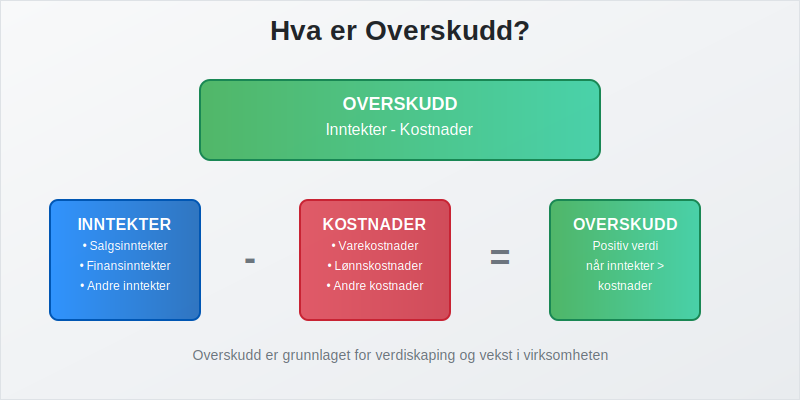
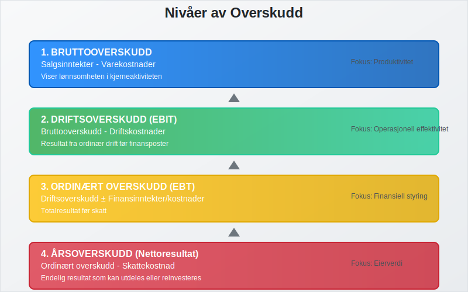
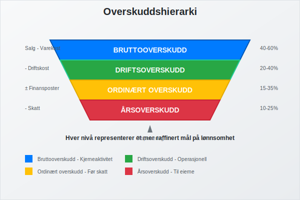
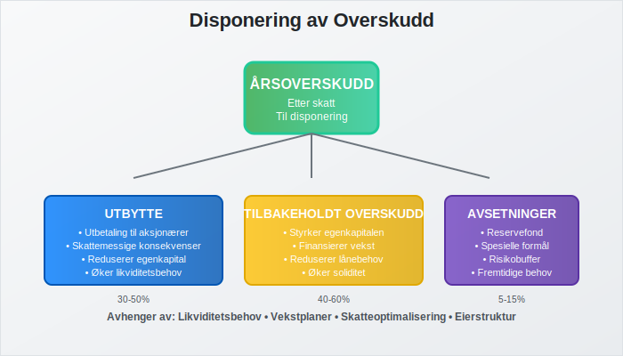
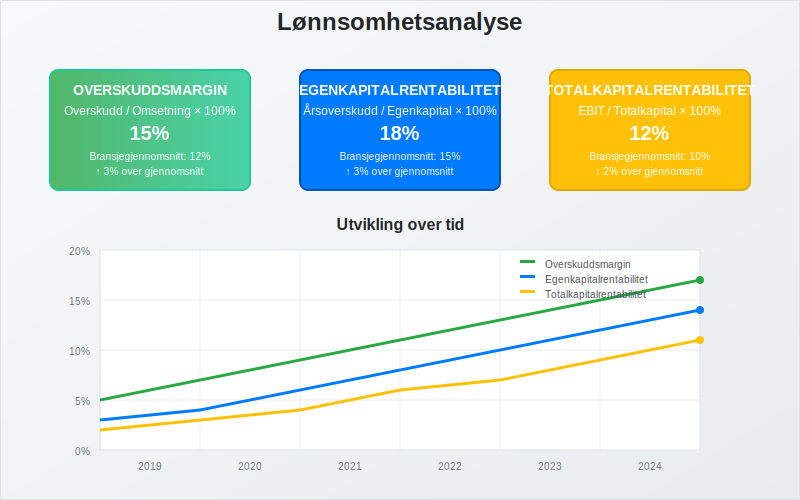
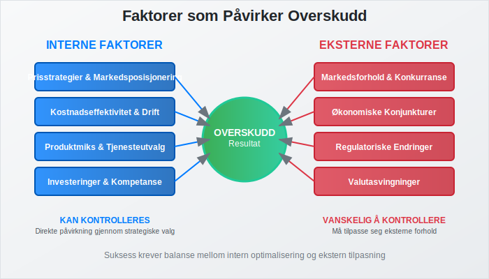
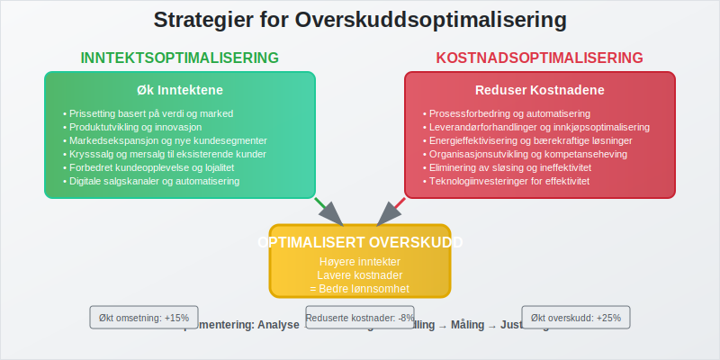
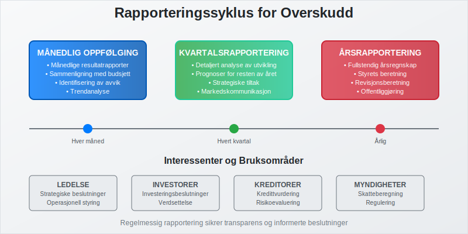
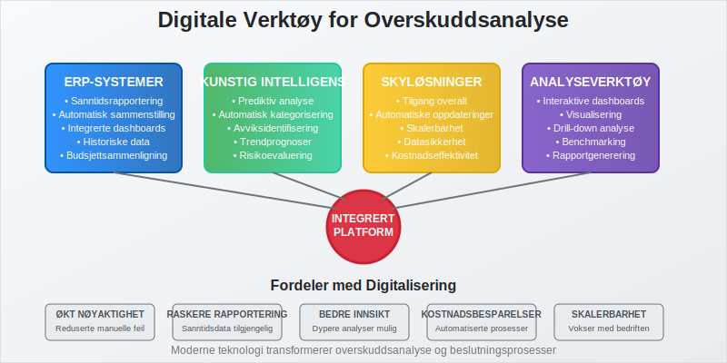

Overskudd er et sentralt begrep i regnskap og økonomi som beskriver det positive resultatet når inntekter overstiger kostnader i en gitt periode. For norske bedrifter er forståelse av overskudd avgjørende for både regnskapsføring, skatteplanlegging og strategiske beslutninger.
Overskudd omtales også ofte som bunnlinje, ettersom det fremgår som det nederste resultatet i resultatregnskapet. Les mer om Bunnlinje.

Definisjon av Overskudd
Overskudd oppstår når en virksomhets totale inntekter er større enn de totale kostnadene i en bestemt regnskapsperiode. Dette representerer den økonomiske verdiskapingen som virksomheten har oppnådd gjennom sin drift.
Grunnleggende Formel
Overskudd = Totale Inntekter - Totale Kostnader
Overskuddet kan også beregnes på flere nivåer i resultatregnskapet:
- Bruttooverskudd = Salgsinntekter - Varekostnader
- Driftsoverskudd = Bruttooverskudd - Driftskostnader
- Ordinært overskudd = Driftsoverskudd + Finansinntekter - Finanskostnader
- Årsoverskudd = Ordinært overskudd - Skattekostnad

Typer Overskudd
Bruttooverskudd (Bruttofortjeneste)
Bruttofortjenesten viser hvor mye virksomheten tjener på sine kjerneaktiviteter før andre kostnader:
- Beregnes som salgsinntekter minus direkte kostnader
- Viser lønnsomheten i selve produksjonen eller salget
- Viktig for å vurdere prisstrategier og kostnadseffektivitet
Driftsoverskudd (EBIT)
Driftsoverskuddet viser resultatet fra den ordinære driften:
- Inkluderer alle driftsinntekter og driftskostnader
- Ekskluderer finansielle poster og skatt
- Brukes for å sammenligne operasjonell lønnsomhet mellom selskaper
- Også kalt EBIT (Earnings Before Interest and Taxes)
Ordinært Overskudd (EBT)
Det ordinære overskuddet inkluderer finansielle poster:
- Driftsoverskudd pluss finansinntekter
- Minus finanskostnader som renter
- Viser totalresultatet før skatt
- Også kalt EBT (Earnings Before Tax)
Årsoverskudd (Nettoresultat)
Årsoverskuddet er det endelige resultatet etter alle kostnader:
- Ordinært overskudd minus skattekostnad
- Det som kan utdeles til eierne eller tilbakeholdes i virksomheten
- Grunnlag for beregning av utbytte i aksjeselskap

Sammenligning av Overskuddstyper
| Overskuddstype | Beregning | Formål | Bruksområde |
|---|---|---|---|
| Bruttooverskudd | Salgsinntekter - Varekostnader | Måle kjerneaktivitetens lønnsomhet | Prisstrategier, kostnadsanalyse |
| Driftsoverskudd | Bruttooverskudd - Driftskostnader | Vurdere operasjonell effektivitet | Sammenligning mellom selskaper |
| Ordinært overskudd | Driftsoverskudd ± Finansposter | Totalt resultat før skatt | Skatteplanlegging, finansanalyse |
| Årsoverskudd | Ordinært overskudd - Skatt | Endelig resultat til eierne | Utbyttepolitikk, reinvestering |
Regnskapsføring av Overskudd
Bokføringsregler
Overskudd bokføres i henhold til god regnskapsskikk og bokføringsloven:
- Periodisering - overskudd føres i den perioden det er opptjent
- Forsiktighetsprinsippet - ikke regn med usikre inntekter
- Sammenstilling - inntekter og kostnader skal sammenstilles
Disponering av Overskudd
For aksjeselskap må overskuddet disponeres:
- Utbytte til aksjonærene
- Overføring til egenkapital for fremtidig bruk (selvfinansiering)
- Avsetninger til spesielle formål
- Reservefond som sikkerhet

Skattemessige Konsekvenser
Skatt på Overskudd
Overskudd beskattes forskjellig avhengig av foretaksform:
Enkeltpersonforetak
- Overskudd beskattes som personinntekt
- Inngår i næringsspesifikasjonen
- Kan få minstefradrag
Aksjeselskap
- Selskapsskatt på 22% av overskuddet
- Utbytte til aksjonærer beskattes separat
- Mulighet for skatteoptimalisering gjennom timing
Skatteplanlegging
Strategisk skatteplanlegging kan optimalisere skattebyrden:
- Timing av inntekter og kostnader
- Investeringer som gir skattemessige fradrag
- Avskrivninger av anleggsmidler
Analyse av Overskudd
Lønnsomhetsanalyse
Overskuddet analyseres gjennom flere nøkkeltall:
Overskuddsmargin
Overskuddsmargin = (Overskudd / Omsetning) × 100%
Egenkapitalrentabilitet
Egenkapitalrentabilitet = (Årsoverskudd / Gjennomsnittlig egenkapital) × 100%
Totalkapitalrentabilitet
Totalkapitalrentabilitet = (Driftsoverskudd / Gjennomsnittlig totalkapital) × 100%

Benchmarking
Sammenligning med bransjegjennomsnitt og konkurrenter:
- Identifiser styrker og svakheter
- Sett realistiske resultatmål
- Vurder konkurranseposisjon
Faktorer som Påvirker Overskudd
Interne Faktorer
- Prisstrategier og markedsposisjonering
- Kostnadseffektivitet og operasjonell drift
- Produktmiks og tjenesteutvalg
- Investeringer i teknologi og kompetanse
Eksterne Faktorer
- Markedsforhold og konkurranse
- Økonomiske konjunkturer
- Regulatoriske endringer
- Valutasvingninger for internasjonale virksomheter

Overskudd vs. Kontantstrøm
Det er viktig å skille mellom overskudd og kontantstrøm:
Forskjeller
| Aspekt | Overskudd | Kontantstrøm |
|---|---|---|
| Grunnlag | Periodisering | Kontantprinsipp |
| Timing | Når opptjent/påløpt | Når betalt/mottatt |
| Inkluderer | Alle inntekter/kostnader | Kun kontanttransaksjoner |
| Bruk | Lønnsomhetsmåling | Likviditetsvurdering |
Hvorfor Forskjellen Oppstår
- Kundefordringer - salg som ikke er betalt
- Leverandørgjeld - kostnader som ikke er betalt
- Avskrivninger - kostnader uten kontantutgang
- Investeringer - kontantutgang uten kostnadsføring
Strategier for Overskuddsoptimalisering
Inntektsoptimalisering
- Prissetting basert på verdi og marked
- Produktutvikling og innovasjon
- Markedsekspansjon og nye kundesegmenter
- Krysssalg og mersalg til eksisterende kunder
Kostnadsoptimalisering
- Prosessforbedring og automatisering
- Leverandørforhandlinger og innkjøpsoptimalisering
- Energieffektivisering og bærekraftige løsninger
- Organisasjonsutvikling og kompetanseheving

Overskudd i Ulike Bransjer
Handelsbedrifter
- Fokus på bruttomargin og lageromløp
- Viktighet av innkjøpspriser og salgsvolum
- Sesongvariasjoner og lagerstyring
Tjenestebedrifter
- Høy andel personalkostnader
- Fokus på timepriser og kapasitetsutnyttelse
- Mindre kapitalbinding i varelager
Produksjonsbedrifter
- Kompleks kostnadskalkyle
- Viktighet av produksjonseffektivitet
- Store investeringer i produksjonsutstyr
Rapportering og Oppfølging
Månedlig Oppfølging
- Månedlige resultatrapporter
- Sammenligning med budsjett og foregående år
- Identifisering av avvik og trender
Kvartalsrapportering
For større selskaper kreves kvartalsrapporter:
- Detaljert analyse av utviklingen
- Prognoser for resten av året
- Strategiske tiltak basert på resultater
Årsrapportering
- Fullstendig årsregnskap med noter
- Styrets beretning om virksomhetens utvikling
- Revisjonsberetning for større selskaper

Juridiske Aspekter
Bokføringsplikt
Alle virksomheter med overskudd har bokføringsplikt når:
- Årlig omsetning overstiger 50 000 kr
- Virksomheten har ansatte
- Virksomheten er merverdiavgiftspliktig
Oppbevaringsplikt
Regnskapsmateriale må oppbevares i 5 år:
- Alle bilag og dokumentasjon
- Hovedbok og reskontro
- Årsregnskap og årsberetning
Internasjonale Regnskapsstandarder
IFRS vs. Norske Regler
For større selskaper kan IFRS være aktuelt:
- Mer detaljerte regler for inntektsføring
- Komplekse regler for finansielle instrumenter
- Økt fokus på virkelig verdi
Sammenlignbarhet
Internasjonale standarder gir:
- Bedre sammenlignbarhet med utenlandske selskaper
- Enklere tilgang til internasjonale kapitalmarkeder
- Økte krav til rapportering og dokumentasjon
Digitalisering og Overskuddsoppfølging
Moderne Regnskapssystemer
ERP-systemer gir:
- Sanntidsrapportering av overskudd
- Automatisk sammenstilling av data
- Prognoser basert på historiske data
Kunstig Intelligens
AI kan bidra til:
- Prediktiv analyse av overskuddsutvikling
- Automatisk kategorisering av transaksjoner
- Identifisering av avvik og muligheter

Konklusjon
Overskudd er et fundamentalt mål på virksomhetens suksess og bærekraft. For norske bedrifter er det avgjørende å:
- Forstå de ulike typene overskudd og deres betydning
- Implementere systemer for løpende oppfølging og analyse
- Optimalisere både inntekter og kostnader strategisk
- Overholde alle juridiske krav til rapportering og dokumentasjon
Ved å ha god kontroll på overskuddet kan virksomheter ta informerte beslutninger, planlegge for fremtidig vekst og sikre langsiktig lønnsomhet. Dette krever både faglig kompetanse og gode systemer for regnskapsføring og analyse.
Overskudd er ikke bare et tall i regnskapet - det er et strategisk verktøy som kan drive virksomheten fremover og skape verdi for alle interessenter.